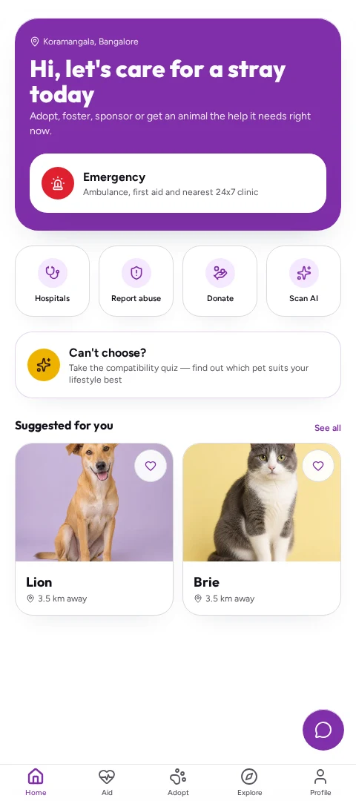
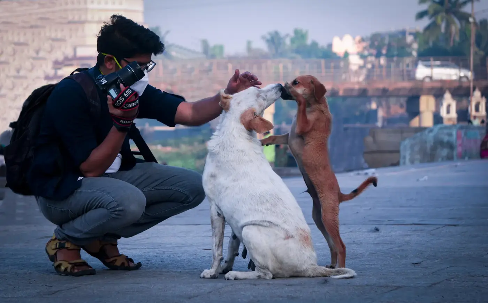
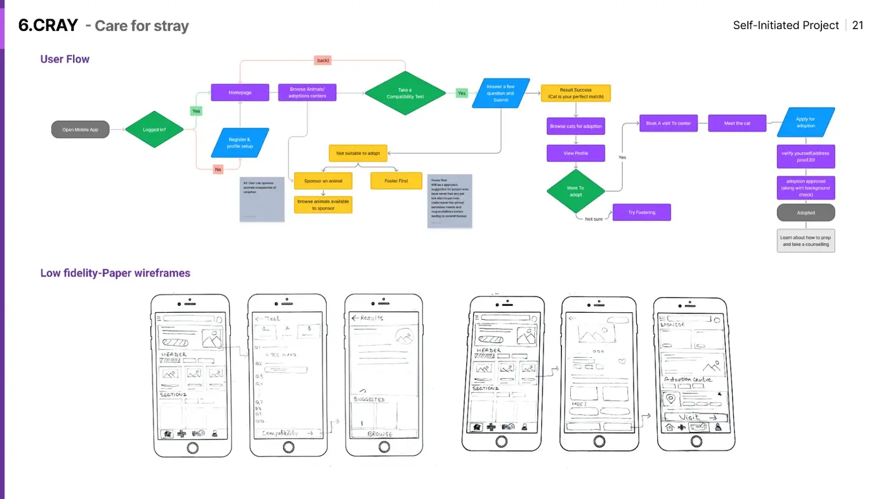
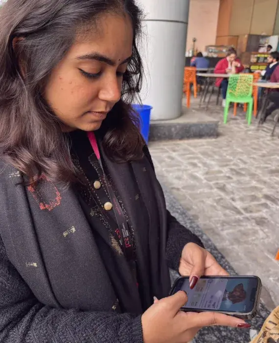
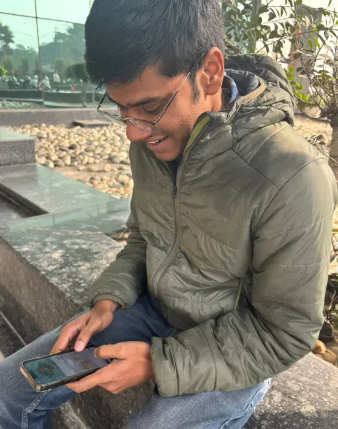
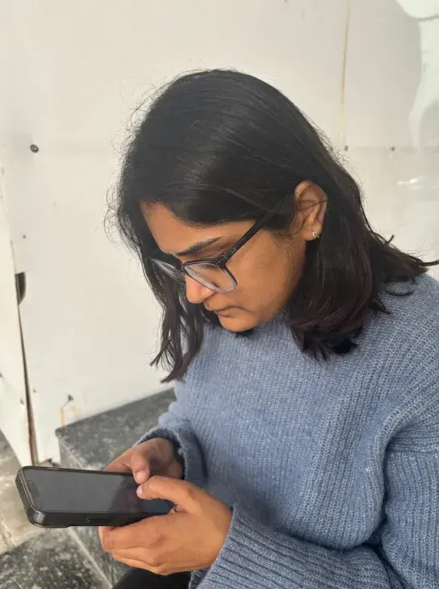
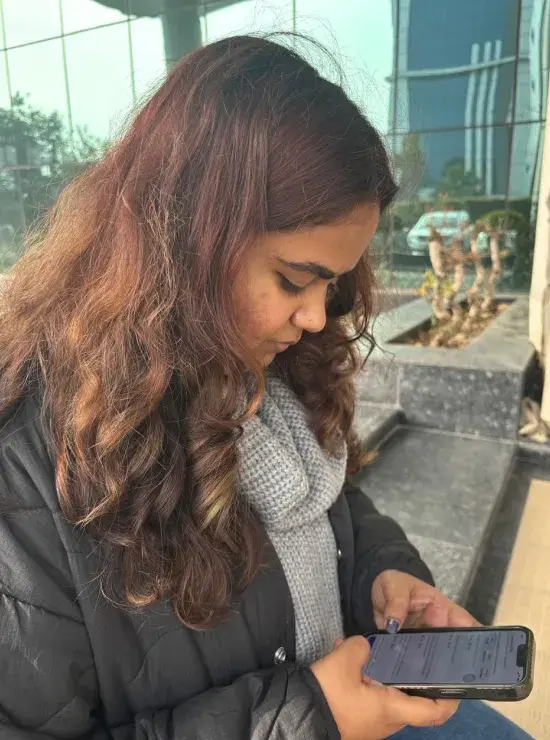

01Finding
01 / 05Led to → Aid
Pain
Found a shivering puppy; no first-aid knowledge and no ambulance to call.
Opportunity
One-tap emergency help: first-aid steps and ambulances.
Case study 05 · CRAY Animal welfare · Self-initiated · 2025
People want to help strays but don’t know where to start. CRAY puts first aid, hospitals, fostering and adoption in one app.
cray
Safer streets.
Happier strays.

People want to help strays, but don’t know where to start. What would make helping easy?
People want to help strays but don’t know where to start, and adopted pets get abandoned.
Information, not intent, was the gap.
Foster first, a which-pet compatibility quiz, and one-tap aid.
A live prototype, four fixes from testing, and an icon-led v2 for low-literacy users.
01 Why
It began with losing a stray I was attached to. I went down the rabbit hole of why: people at both extremes, those who go out of their way to help and those who harm, and animals that swing between trust and fear.

One platform for stray animal care that turns goodwill into action.
The scale · strays in India
7.1crore stray animals02 Research
My survey of people who feed and help strays surfaced two problems: pets abandoned after adoption, and infections that go untreated. Help exists, but it’s hard to find.
strays suffers from some kind of infection.
of the 77% who didn’t know would sponsor an animal, once told how.
find it hard to reach one
don’t know where one is
03 · Insight
Information, not intent, was the gap.
The survey and Tarun’s journey said the same thing. Hospitals listed the wrong hours, nobody knew first aid, and shelters had no space.
Design for the moment someone finds an animal in trouble, not for browsing. Aid comes first on the home screen.
Persona & journey
Tarun is a persona traced through one rescue, from a shivering puppy to a shelter. Each pain point became a feature.

Led to → Aid
Found a shivering puppy; no first-aid knowledge and no ambulance to call.
One-tap emergency help: first-aid steps and ambulances.
Led to → Aid
Couldn’t tell which nearby hospitals were real or open.
A trusted list of vets and hospitals, built with doctors.
Led to → Hospitals
Arrived to find clinics closed; listed timings were wrong.
Live, location-based hospital hours.
Led to → Sponsor
The shelter turned the puppy away: no space, little funding.
Sponsor an animal, and show shelter capacity up front.
Led to → Foster first
Couldn’t keep the puppy himself; no foster homes to turn to.
Foster before adopting, with checked and monitored centres.
04 Structure
A card sort gave the app its four tabs: Home, Aid, Adoption and Explore. Bars show how many of 10 participants put each card in that group. Rarely placed cards were merged or dropped.
What people want first: emergencies, reminders and a quick fit check.
Medical help scored highest, with every item at full marks but one.
The full adoption journey, from finding a centre to counselling.
Trust builders: verification, events and community.
If an adoption is rejected after the background check, the flow routes people to foster or sponsor instead.

05 Solution
Abandonment starts with a bad match. CRAY slows the decision down without losing the person, and puts aid one tap away.
Adoption starts as a foster period. People live with the animal before they commit, and can step back without abandoning it.
A short quiz about home, routine and budget suggests the right animal, and scores compatibility so the shelter sees the fit too.
A symptom scan, a live hospital list and ambulance calls for the moment someone finds an injured animal.
Real screens from the live prototype. Tap a screen to open it.
06 Testing
Each person used the prototype on their own phone, on one task. One piece of feedback each, and what changed.

Report an injured stray
I hit the emergency button by mistake.
FixMoved it away from the main actions and added a confirm step.

Set up a profile
Can it work in regional languages?
FixLanguage switch added to onboarding.

Sponsor a stray
I couldn’t find how sponsoring works.
FixGuidelines now sit on every sponsor card.

Find an NGO to adopt from
I want to learn about what specific NGOs are doing.
FixNGO profiles added to Explore.
A live prototype with foster-first adoption and a which-pet quiz that checks compatibility. Testing led to four fixes and an icon-led v2 for low-literacy users.
07 Reflection
I built the whole app in English without thinking twice, and that assumption showed my privilege. Testing showed that not every user reads English, or reads at all. V2 adds regional languages and leans on icons, imagery and voice instead of text-heavy screens.
Run the compatibility quiz with a shelter, and measure how many fosters turn into adoptions against how many animals are returned.
Work with me
Hiring a product designer? Let’s talk.